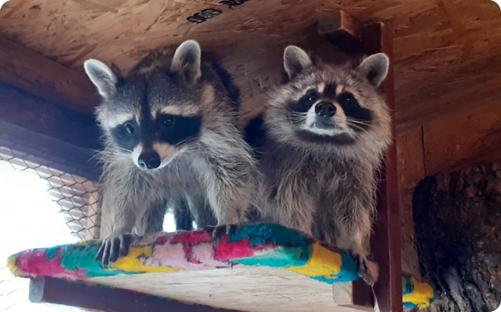

Миша и Умка

Пол:самец и самка
Порода: Енот-полоскун
Возраст: 2019 г.р. (3 года)
Характер:
Миша очень обаятельный и общительный парень, умеет лапкой «дать пять». Всегда готов к приёму угощений! Умка же, скромная, но импульсивная, потому как слишком активно радуется угощению.
Особенности:
Еноты активны ночью, поэтому играют, катаются с горки они именно в этом время суток. Днём они мало активны и в основном выходят к людям лишь за угощением. Вечером могут начать веселиться.
Появление в парке:
Енотов привезли парой, из Самары. До этого они жили в доме у частного лица. Теперь они живут у нас в просторном вольере, где могут в волю порезвиться. Особенно купать в воде свои игрушки. А почему еноты так любят всё «стирать», Вы сможете у нас на экскурсии.